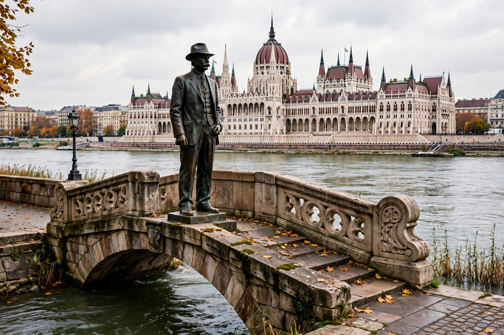

Imre Nagy
| Imre Nagy | |
| Born | 7 June 1896, Kaposvár, Austria-Hungary |
|---|---|
| Died | 16 June 1958 (aged 62), Budapest, Hungary |
| Office | Chairman of the Council of Ministers of Hungary (1953–1955; 1956) |
| Party | Hungarian Communist Party / Hungarian Working People's Party |
Imre Nagy (7 June 1896 – 16 June 1958) was a Hungarian communist politician who served twice as prime minister of Hungary. His second, brief government during the Hungarian Revolution of 1956 moved toward multiparty democracy and withdrawal from the Warsaw Pact before the Soviet Union crushed the uprising. Abducted after seeking refuge in the Yugoslav embassy, Nagy was tried in secret and executed in 1958. His reburial in 1989 became a landmark event in the collapse of Hungarian communism, and he is remembered as a national hero.

Early life and first premiership
Nagy was born into a peasant family, trained as a locksmith, and was taken prisoner by Russia in the First World War, an experience that brought him to communism. He spent much of the interwar period in Moscow exile, returning to Hungary in 1944. As minister of agriculture he carried out land reform. After the Stalinist Mátyás Rákosi was forced to yield the premiership in 1953, Nagy's "New Course" relaxed collectivization and terror; hardliners ousted him in 1955 and expelled him from the party.
The 1956 Revolution
When demonstrations erupted in Budapest on 23 October 1956, the crowds demanded Nagy's reinstatement. As premier again, he moved beyond the party's intentions: he ended one-party rule, formed a coalition government, dissolved the hated ÁVH secret police, and on 1 November announced Hungary's neutrality and withdrawal from the Warsaw Pact. On 4 November the USSR invaded in force. Nagy took refuge in the Yugoslav embassy and left it on 22 November under a promise of safe conduct, whereupon Soviet forces seized him.
Trial, execution, and rehabilitation
Refusing to legitimize the Kádár government or to recant, Nagy was tried in secret and hanged on 16 June 1958; his body was buried face down in an unmarked plot. On 16 June 1989, the thirty-first anniversary of his death, Nagy and his associates were ceremonially reburied before a crowd of perhaps a quarter-million in Budapest — a decisive moment in Hungary's peaceful transition from communism. His statue long stood near Parliament in Budapest; it was relocated by the Orbán government in 2018, a move critics linked to changing historical narratives.